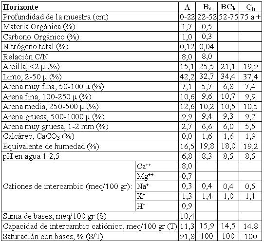

Argiustol típico, franca fina, mixta, térmica (calcárea)
Capacidad de uso: IIIc
Esta serie de suelos se ha desarrollado a partir de derrames distales de desbordes correspondiente loess redepositados con influencia fluvial que se advierte por la incorporación de un porcentaje menor de fracciones de áreas gruesas en relación a los loess típicos de la región. Domina en amplios sectores suavemente cóncavos y aplanados con complejos o asociaciones con otras series de aptitud o capacidad de uso semejantes. El valor del gradiente raramente supera la pendiente regional menor al 0,5%. Presenta superficialmente un horizonte A de 22 cm de espesor, franca a franco limosa, de color oscuro, franco limoso y estructura en bloques subangulares. Continúa hacia abajo hasta 52 cm de profundidad un horizonte subsuperficial enriquecido moderadamente en arcillas iluviales con barnices comunes a abundantes en las caras de los agregados (Bt) de textura franca a franco arcillosa, con ligera reacción al acido clorhídrico en la masa del suelo. El material originario del suelo se encuentra a 75 cm de profundidad con carbonatos libres no salino y no sódico.
Descripción del perfil típico:
El perfil representativo de esta serie fue descripto a 15 km al NE de la localidad de Río Primero, departamento del mismo nombre, provincia de Córdoba.
A 0-22 cm; color en húmedo pardo grisáceo muy oscuro (10YR3/2), franco a franco limoso, estructura en bloques subangulares medios moderados, friable en húmedo, ligeramente plástico, no adhesivo, pH 6,8., raíces abundantes, límite inferior claro.
Bt 22-52 cm; color en húmedo pardo oscuro (10YR3/3), franco a franco arcilloso, estructura en prismas irregulares medios moderados, friable en húmedo, ligeramente plástico, ligeramente adhesivo, pH 8,3, ligera reacción al ClH en la masa del suelo, escasas concreciones de carbonato de calcio finas, barnices de arcilla y humus comunes a abundantes, escasas raíces, límite inferior gradual.
BCk 52 a 75 cm; color en húmedo pardo amarillento oscuro (10YR3/4), franco, estructura en bloques débiles gruesos, friable en húmedo, no plástico, no adhesivo, pH 8,5, escasa reacción al ClH en la masa del suelo, barnices escasos de arcillas iluviales, raíces escasas, límite inferior claro.
Ck 75 cm a más; color en húmedo pardo amarillento oscuro (10YR4/4), franco, masivo; muy friable en húmedo, no plástico, no adhesivo, pH 8,5, moderada reacción al ClH en la masa del suelo, vestigios de raíces.
Cuadro Nº22
Datos analíticos Serie LAS CORTADERAS
Situación: Latitud: 31º14’S Longitud: 63º23’O Altitud: 210 m.s.n.m.

|